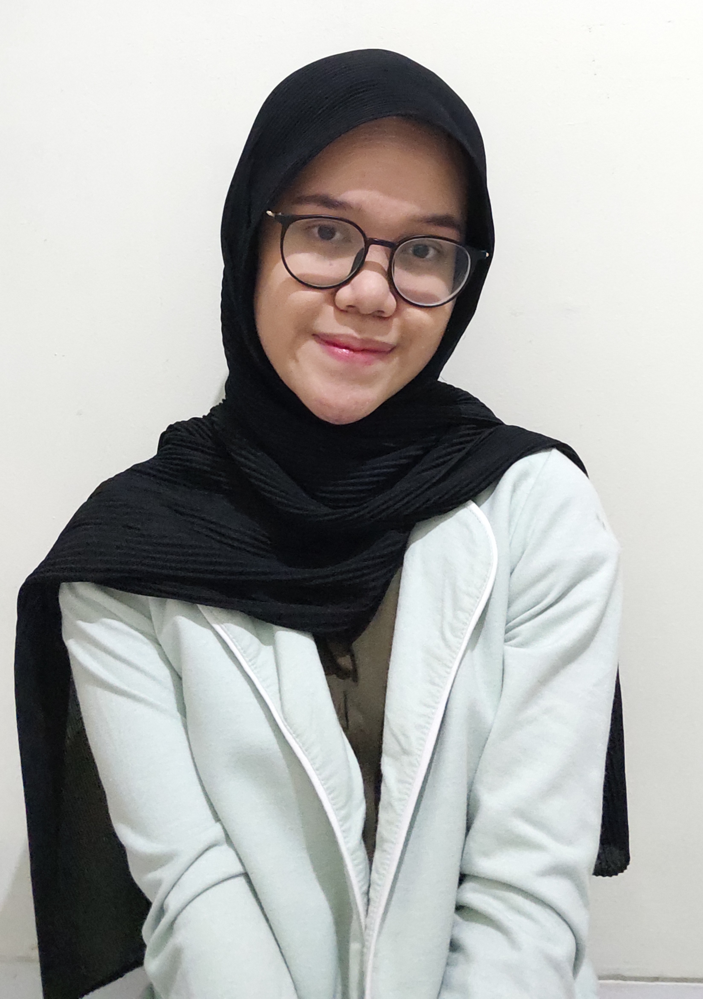

Tentang Saya
A fast-learner, highly dedicated, and innovative person who are interested in management and technology. She is an undergraduate student of Information Systems who craves growth and learn a lot. She is passionate in project
and product management. She has been experienced in managing team and project as she became Project Manager at Career Development Center UIN Jakarta and freelancer as Task Creation Manager at Rakamin Academy putting her
knowledge about managing into something broad.
